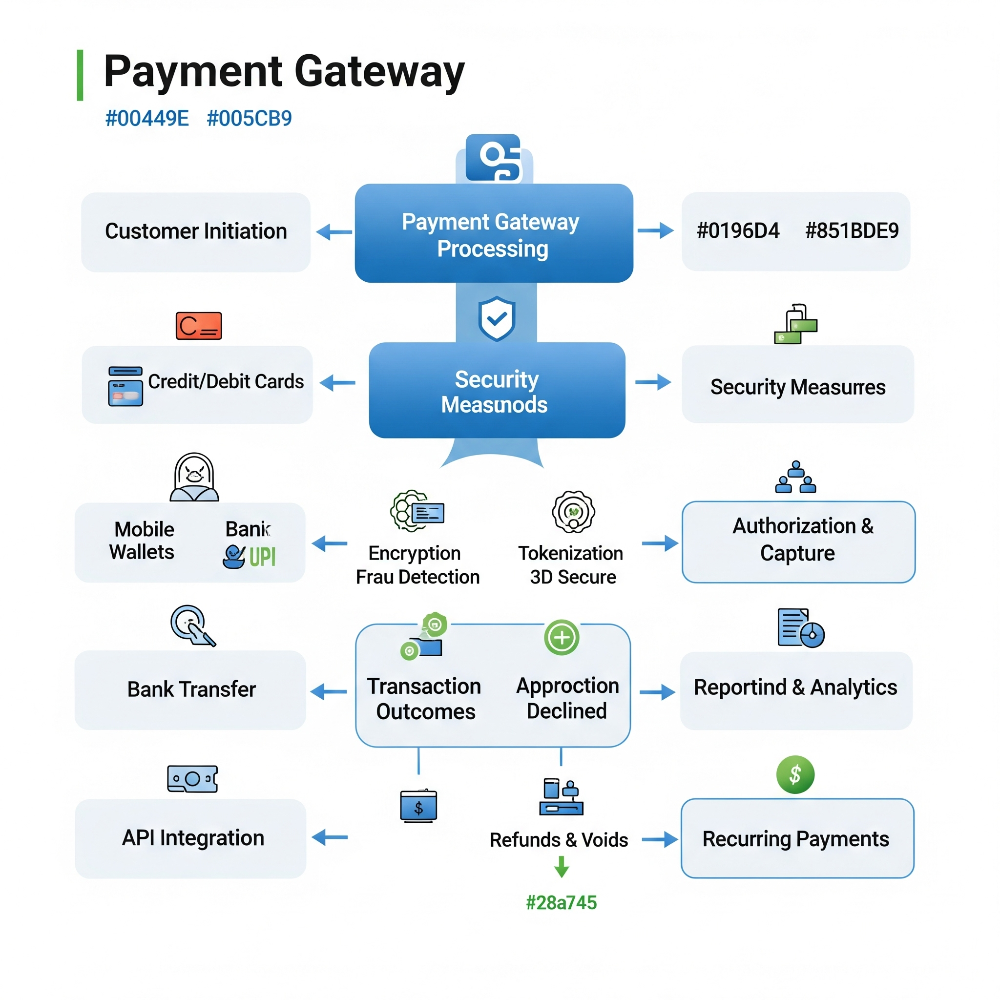
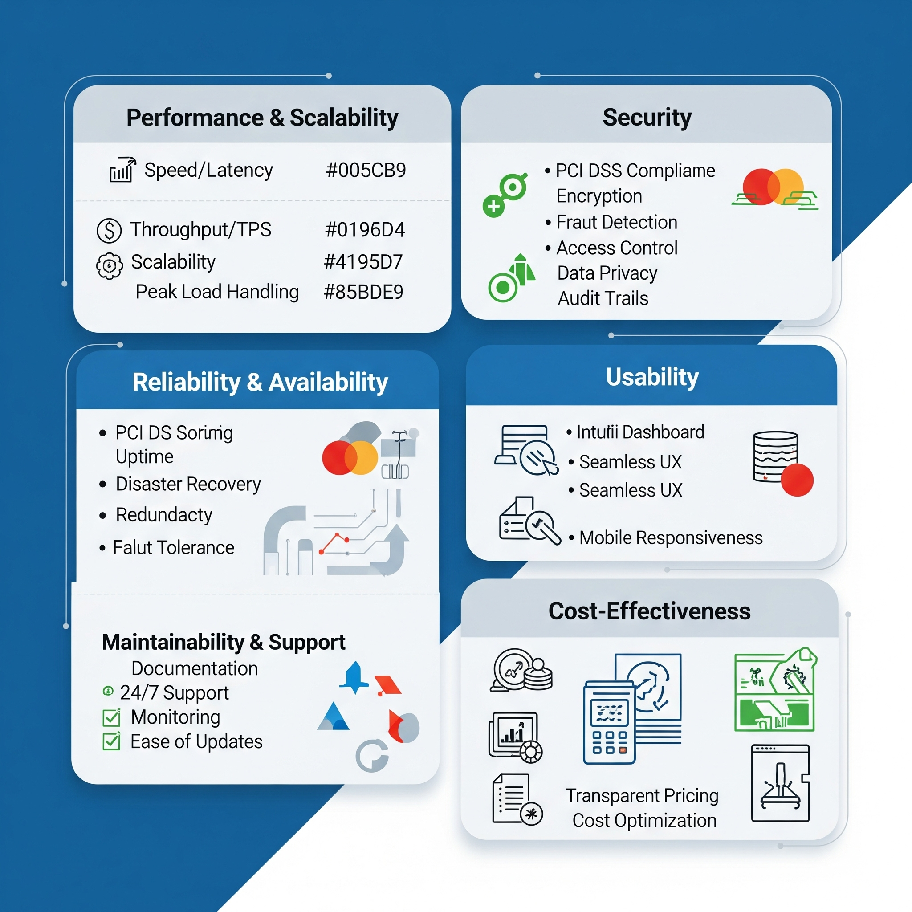

Functional Requirements
These define the core operations and specific features the system *must* perform. Understanding every financial operation and data flow is key.

Transaction Processing:
- What are all the possible supported transaction types (e.g., Sale/Auth & Capture, Pure Authorization, Capture, Refund, Partial Refund, Void/Cancellation, Pre-Auth Completion, Recurring Payment Initiation)? For each type, what are the mandatory and optional parameters required in the request?
- How do we handle different payment methods (Credit/Debit Cards - Visa, Mastercard, RuPay, Amex; Net Banking - which specific banks?; UPI; Wallets - which ones?; EMI options - which banks/partners?)? Are there separate APIs or integration flows for each?
- What is the maximum allowed transaction amount per transaction type/payment method? Are there daily/monthly limits?
- How are transaction IDs generated and managed? Is there a unique transaction ID provided by the bank that we can use for reconciliation?
- What is the timeout period for a transaction request? What is the expected behaviour if a timeout occurs on either side?
Payment Flow & User Experience:
- What are the available integration models for payment initiation (e.g., Redirect to gateway page, Iframe integration, Direct API submission/Server-to-Server)? What are the pros/cons and security implications of each from the bank's perspective?
- How will 3D Secure 2.0 (or similar authentication) be implemented? Is it a mandatory step for all card transactions? What is the exact user flow for this?
- How are failed transactions communicated to our system and to the end-user? What are the specific error codes and their meanings?
- Is there a way to customize the payment page (if redirected/iframe) with our branding? To what extent?
- How are retries handled for failed transactions? Is there an automatic retry mechanism, or do we need to implement it?
Settlement & Reconciliation:
- What is the settlement cycle (e.g., T+0, T+1, T+2 business days)? When does the money typically hit our bank account?
- In what format (e.g., CSV, XML, API) are settlement reports provided? What data points are included in these reports (e.g., Gross amount, Net amount, Transaction ID, Bank Ref No., Fees, Taxes)? How often are these reports available?
- How do we access daily transaction logs/reports for reconciliation? Can we pull them via an API or are they available for download from a portal?
- Are there specific reconciliation codes/statuses that we need to map in our system?
- How are chargebacks and disputes reflected in reconciliation reports? What is the process for receiving notifications about chargebacks?
Refunds & Voids:
- What is the API/process for initiating a refund? Can partial refunds be initiated?
- What is the time limit for initiating a refund after a successful transaction?
- What is the API/process for voiding an authorized but not captured transaction? What is the time limit for a void?
- How are refund statuses communicated back to our system?
- Are there any fees associated with refunds or voids?
Reporting & Analytics (On Gateway):
- What kind of dashboard or portal is available for us to view transactions, settlements, and other metrics?
- Can we generate custom reports based on specific criteria (e.g., date range, transaction status, payment method)?
- Are there any real-time reporting APIs available?
Non-Functional Requirements
These define how well the system performs its functions. They are crucial for user satisfaction, system reliability, and business continuity.

Performance & Scalability:
- What is the expected latency for transaction processing (response time for a successful transaction)?
- What is the maximum number of transactions per second (TPS) that the payment gateway can handle for our account/setup? Are there any rate limits we should be aware of?
- How does the gateway handle peak loads and traffic spikes? What assurances are there for maintaining performance during high volume periods (e.g., sale events)?
- What is the typical uptime (SLA for availability) of the payment gateway?
- How quickly can the system recover from a failure (Recovery Time Objective - RTO)?
Security:
- What are the specific PCI DSS compliance levels the bank/gateway adheres to, and what are our responsibilities as the merchant (e.g., SAQ A, SAQ A-EP, SAQ D)?
- How is sensitive card data transmitted and stored? What encryption standards (e.g., TLS 1.2+, AES-256) are used for data in transit and at rest?
- Is tokenization of card data supported/mandatory? How does it work, and what are the benefits/implications for our system?
- What are the authentication mechanisms for API access (e.g., API keys, OAuth 2.0, mutual TLS)? How often do these credentials need to be rotated?
- What fraud detection and prevention tools are natively supported/offered? (e.g., AVS, CVV checks, device fingerprinting, velocity checks, custom rules engines). How can we integrate with these?
- What is the process for security audits or penetration testing from our side, if required?
Reliability & Availability:
- What is the disaster recovery plan for the payment gateway? How quickly can operations can be restored in case of a major outage?
- Are there redundant systems or failover mechanisms in place for the gateway?
- How will we be notified of scheduled maintenance or unscheduled outages? What is the typical notice period?
- What is the expected success rate for transactions (e.g., 99.9% success rate for valid transactions)?
Maintainability & Supportability:
- How frequently are API versions updated? What is the deprecation policy for older API versions?
- Is there comprehensive API documentation available, including error codes, sample requests/responses, and best practices?
- What are the support channels (email, phone, dedicated account-manager)? What are the support hours?
- What is the Service Level Agreement (SLA) for issue resolution, especially for critical production issues?
- Are there sandbox/testing environments that accurately mirror production? How can we get access and test extensively?
- How is monitoring and logging provided by the gateway? Can we access detailed transaction logs for troubleshooting our end?
Compliance & Legal:
- Beyond PCI DSS, what other local regulatory requirements (e.g., RBI guidelines for tokenization, data localization, recurring payments, e-mandates) must be adhered to?
- Are there specific data retention policies that we need to be aware of for transaction logs or customer data?
- What is the process for dispute resolution/chargeback handling from a legal and operational standpoint? What documentation is required from our end for chargeback defense?